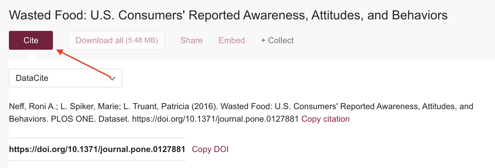

Responsibly reuse
Last updated on 2026-09-10 | Edit this page
Estimated time: 25 minutes
Overview
Questions
- How to cite data when reusing a data source?
- How do we make sure data will be reused?
Objectives
- The participant will understand the importance of data citation.
- The participant will learn tools to test discoverability for data to be reused.
FAIR principles used in Data Reusing:
Findable
FM-F1B (Identifier persistence) → doi.org/10.25504/FAIRsharing.TUq8Zj
FM-F4 (Indexed in a Searchable Resource) → doi.org/10.25504/FAIRsharing.Lcws1N
Reusable
FM-R1.2 (Detailed Provenance) → doi.org/10.25504/FAIRsharing.qcziIV
1. How to cite data when reusing a data source?
‘Data Reusing’ are activities for recycling existing research data sources.
By default, we should make the research data documentation in citable and reusable formats.
The minimum citation elements recommended by DataCite are: - Creator - Publication Year - Title - Resource Type or Version - Publisher - Digital Object Identifier
For example:
Neff, Roni A.; L. Spiker, Marie; L. Truant, Patricia (2016): Wasted Food: U.S. Consumers’ Reported Awareness, Attitudes, and Behaviors. PLOS ONE. Dataset. https://doi.org/10.1371/journal.pone.0127881
Original dataset at Wasted Food: U.S. Consumers’ Reported Awareness, Attitudes, and Behaviors → LINK TO EXAMPLE
Nowadays, data repositories have a friendly interface on which one can export the data citation directly from the webpage, such as ZENODO, Dataverse, or FigShare.

Citing datasets increases publication visibility by 25%.
When we cite a dataset using a standard format (e.g., recommended by DataCite), then we allow data aggregators to “pick up” on the citations just like publications. Therefore, they immediately become discoverable for scientific sources.
2. How do we make sure data can be reused?
Remember that a dataset or a data source is a digital object. So Digital Objects “live” on the web. Imagine they are like fishes in the sea 🐠🐠. The way to get picked up by a “fisherman” 🎣 i.e. a search engine (e.g. Google), is by describing these Digital Objects with Rich Metadata (Episode 5). Moreover we can check the quality of discoverability of the Digital Objects by conducting automated tests.
There are different available applications to test the discoverability of datasets for future reuse.
For example:
In Google Rich Results search.google.com/test/rich-results,
you can test whether a dataset is discoverable by other machines
(e.g. Google bots)→ LINK
TO EXAMPLE

After testing the URL of the data source, you will get the response from the Google bots. We aim to determine if the Google bots have found a structured dataset with the link we provided.

Following the FAIR principles, you ensure Rich Metadata
Rich metadata is necessary to be discoverable on the internet. Without testing it, your data can be virtually invisible on the web
Challenge
The following website is a database of crime news related to cultural objects news.culturecrime.org Perform Google’s rich test on this data source. You can copy the URL of the browser and put it on the search.google.com/test/rich-results
Did the Google bots find the dataset?
Nope 🙁
They did not. This is a clear example that a data source can be
human-friendly but not necessarily machine friendly
If you want to learn more about the Rich Results Test, you can find it here: support.google.com/webmasters/.
The FAIR principles rely in the idea of structured data following Semantic Web guidelines and formats. All search engines (e.g. Google) and data aggregators (e.g. Elsevier)work with the same standards making it easier to discover datasets. They can understand structured data in web pages about datasets using either schema.org, Dataset markup or equivalent structures represented in W3C’s Data Catalog Vocabulary (DCAT) format.
When you have a project website, or project folder accessible to third parties, you must include the Rich Metadata format in the root folder for the data source to be discoverable and therefore Reusable
For example:
<html>
<head>
<title>This Dataset is a FAIR example</title>
<script type="application/ld+json">
{
"@context":"https://schema.org/",
"@type":"Dataset",
"name":"Dummmy Data",
"description":"This is an example for the Bootcamp",
"url":"https://example.com",
"identifier": ["https://doi.org/XXXXXX",
"https://identifiers.org/XXXX"],
"keywords":[
"DUMMY DATA",
"EXAMPLE FORMAT",
],
"license" : "https://creativecommons.org/publicdomain/zero/1.0/",
"isAccessibleForFree" : true,
"funder":{
"@type": "Organization",
"sameAs": "https://example.com",
"name": "NATIONAL FUNDING"
}
}
</script>
</head>
<body>
</body>
</html>Challenge
Visit the dataset you uploaded in the Data Archiving episode. Download the Rich Metadata file (JSON-LD) format.
What similarities do you find with the above example?
The format is JSON-LD: type=“application/ld+json”
The vocabulary is Schema.Org: “@context”:“https://schema.org/”
The type is a Dataset: “@type”:“Dataset”
Select datasets from previous examples. Perform FAIR tests in FAIR enough
What can you tell from the FAIR scores?
- ‘Digital Objects (e.g., Datasets) “live” on the web, imagine they are like fishes in the sea 🐠🐠. The way to get picked up by a “fisherman” 🎣 i.e., a search engine (e.g., Google) is by describing these Digital Objects with Rich Metadata.’